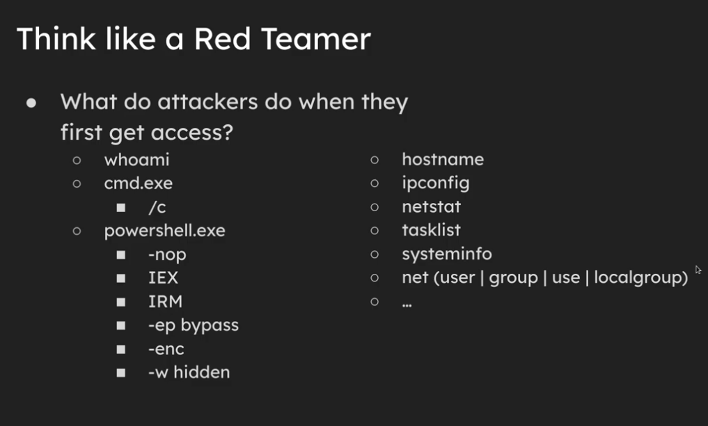

Windows Blue Team¶
Record events and take them off server for viewing and notification of suspicious activity¶
- Use sysmon
- Get a SIEM (Splunk or Wazuh)
- LDAP Object Monitor (See user changes live)
- EDR specialized software
Detect Common First Access Programs¶
- whoami, etc
- Many of these programs should not have to be run at all

Sysinternals Suite Provided by Windows¶
- Use sysmon
- AutoRuns - Finds anything that auto starts and has some advanced auto features like uploading to VirusTotal
Common windows CLI commands¶
Command Prompt¶
Powershell¶
SMB¶
- Disable SMB null and anonymous authentication
- This is something that allows somebody to login without username and password and is abused frequently
- Possibly keep it enabled and automatically block IPs that connect via it
SSH¶
- Routinely check what SSH public keys are being stored and accepted
- Routinely check SSH configuration
Dictionary¶
- Endpoint: Any decive that connects to a network and can send, recieve, or process data.
- Sysmon: A windows service thats logs system activity to the Windows Event Log
- SIEM: Security Information and Event Management
- XDR: Extended Detection and Response
- Directory Server: Centralized databases that store and manage information about users, devices, and network resources.
- Active Directory: Windows server version of a directory server
- EDR: Endpoint and Detection Response